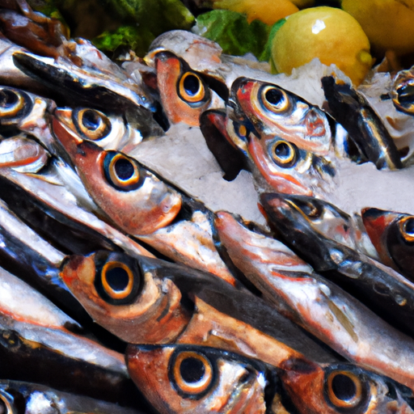

Servizi offerti
Ecco alcuni servizi che possiamo offrire ai nostri clienti più esigenti, per garantire loro un soggiorno indimenticabile e pieno di esperienze uniche:
- Escursioni in barca per visitare le splendide spiagge e calette della zona;
- Gite guidate per visitare siti archeologici o città storiche come Taormina e Siracusa;
- Noleggio di attrezzature per sport acquatici come kayak, paddle board o snorkeling;
- Servizio di noleggio auto o biciclette per esplorare i dintorni;
- Organizzazione di degustazioni di vini locali e cene tipiche siciliane;
- Servizio di trasferimento da e per l'aeroporto o la stazione ferroviaria;
- Consulenza e prenotazioni per spettacoli, eventi culturali o attività ricreative nella zona.
